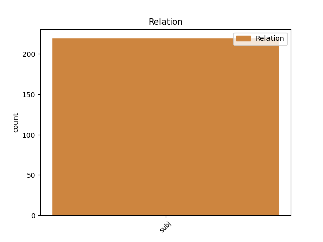
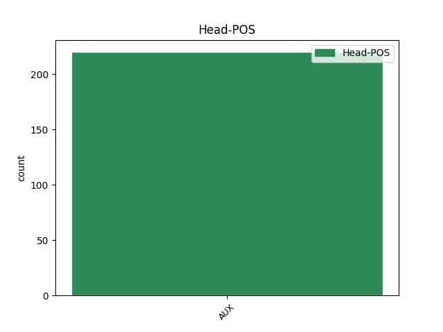
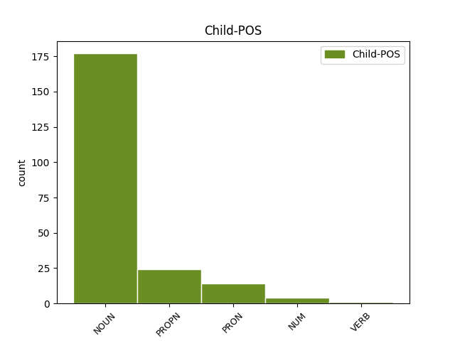

Distribution of features within this leaf



Agreement Rules sorted by frequency.
- When the dependent token is the subject(subj) of the head token, and the head token is AUX and the dependent token is NOUN.
1 Práce práce NOUN NNFS1-----A---- Case=Nom|Gender=Fem|Number=Sing|Polarity=Pos 3 subj _ _
2 mu _ _ _ _ 0 _ _ _
3 byla být AUX VpFS----R-AA--- Gender=Fem|Number=Sing|Polarity=Pos|Tense=Past|VerbForm=Part|Voice=Act 0 _ _ _
4 potěšením _ _ _ _ 0 _ _ _
5 a _ _ _ _ 0 _ _ _
6 zděděný _ _ _ _ 0 _ _ _
7 majetek _ _ _ _ 0 _ _ _
8 postupně _ _ _ _ 0 _ _ _
9 narůstal _ _ _ _ 0 _ _ _
10 . _ _ _ _ 0 _ _ _
1 Meyer Meyer PROPN NNMS1-----A---- Animacy=Anim|Case=Nom|Gender=Masc|NameType=Sur|Number=Sing|Polarity=Pos 2 subj _ _
2 byl být AUX VpMS----R-AA--- Animacy=Anim|Gender=Masc|Number=Sing|Polarity=Pos|Tense=Past|VerbForm=Part|Voice=Act 0 _ _ _
3 šťastný _ _ _ _ 0 _ _ _
4 . _ _ _ _ 0 _ _ _
1 Tento _ _ _ _ 0 _ _ _
2 pohled _ _ _ _ 0 _ _ _
3 se _ _ _ _ 0 _ _ _
4 mu _ _ _ _ 0 _ _ _
5 vryl _ _ _ _ 0 _ _ _
6 do _ _ _ _ 0 _ _ _
7 paměti _ _ _ _ 0 _ _ _
8 a _ _ _ _ 0 _ _ _
9 on on PRON PPMS1--3------- Animacy=Anim|Case=Nom|Gender=Masc|Number=Sing|Person=3|PronType=Prs 11 subj _ _
10 si _ _ _ _ 0 _ _ _
11 byl být AUX VpMS----R-AA--- Animacy=Anim|Gender=Masc|Number=Sing|Polarity=Pos|Tense=Past|VerbForm=Part|Voice=Act 0 _ _ _
12 jist _ _ _ _ 0 _ _ _
13 , _ _ _ _ 0 _ _ _
14 že _ _ _ _ 0 _ _ _
15 už _ _ _ _ 0 _ _ _
16 ji _ _ _ _ 0 _ _ _
17 ani _ _ _ _ 0 _ _ _
18 žádnou _ _ _ _ 0 _ _ _
19 z _ _ _ _ 0 _ _ _
20 jejích _ _ _ _ 0 _ _ _
21 přítelkyň _ _ _ _ 0 _ _ _
22 nikdy _ _ _ _ 0 _ _ _
23 nenavštíví _ _ _ _ 0 _ _ _
24 . _ _ _ _ 0 _ _ _
1 Jeden jeden NUM ClMS1---------- Animacy=Anim|Case=Nom|Gender=Masc|Number=Sing|NumForm=Word|NumType=Card|NumValue=1,2,3 2 subj _ _
2 byl být AUX VpMS----R-AA--- Animacy=Anim|Gender=Masc|Number=Sing|Polarity=Pos|Tense=Past|VerbForm=Part|Voice=Act 0 _ _ _
3 chudý _ _ _ _ 0 _ _ _
4 , _ _ _ _ 0 _ _ _
5 druhý _ _ _ _ 0 _ _ _
6 bohatý _ _ _ _ 0 _ _ _
7 . _ _ _ _ 0 _ _ _
1 " _ _ _ _ 0 _ _ _
2 Co _ _ _ _ 0 _ _ _
3 tobě _ _ _ _ 0 _ _ _
4 připadalo připadat VERB VpNS----R-AA--- Gender=Neut|Number=Sing|Polarity=Pos|Tense=Past|VerbForm=Part|Voice=Act 8 subj _ _
5 jako _ _ _ _ 0 _ _ _
6 neštěstí _ _ _ _ 0 _ _ _
7 , _ _ _ _ 0 _ _ _
8 bylo být AUX VpNS----R-AA--- Gender=Neut|Number=Sing|Polarity=Pos|Tense=Past|VerbForm=Part|Voice=Act 0 _ _ _
9 pro _ _ _ _ 0 _ _ _
10 mě _ _ _ _ 0 _ _ _
11 vlastně _ _ _ _ 0 _ _ _
12 dobrou _ _ _ _ 0 _ _ _
13 zprávou _ _ _ _ 0 _ _ _
14 . _ _ _ _ 0 _ _ _
Disagree Examples:
1 Těch _ _ _ _ 0 _ _ _
2 deset _ _ _ _ 0 _ _ _
3 hodin hodina NOUN NNFP2-----A---- Case=Gen|Gender=Fem|Number=Plur|Polarity=Pos 9 subj _ SpaceAfter=No
4 , _ _ _ _ 0 _ _ _
5 které _ _ _ _ 0 _ _ _
6 právě _ _ _ _ 0 _ _ _
7 odtikaly _ _ _ _ 0 _ _ _
8 , _ _ _ _ 0 _ _ _
9 bylo být AUX VpNS----R-AA--- Gender=Neut|Number=Sing|Polarity=Pos|Tense=Past|VerbForm=Part|Voice=Act 0 _ _ _
10 časem _ _ _ _ 0 _ _ _
11 , _ _ _ _ 0 _ _ _
12 který _ _ _ _ 0 _ _ _
13 mi _ _ _ _ 0 _ _ _
14 ukázal _ _ _ _ 0 _ _ _
15 , _ _ _ _ 0 _ _ _
16 co _ _ _ _ 0 _ _ _
17 to _ _ _ _ 0 _ _ _
18 je _ _ _ _ 0 _ _ _
19 pochopení _ _ _ _ 0 _ _ _
20 člověka _ _ _ _ 0 _ _ _
21 pro _ _ _ _ 0 _ _ _
22 člověka _ _ _ _ 0 _ _ _
23 , _ _ _ _ 0 _ _ _
24 velkorysost _ _ _ _ 0 _ _ _
25 a _ _ _ _ 0 _ _ _
26 moudrost _ _ _ _ 0 _ _ _
27 . _ _ _ _ 0 _ _ _
1 Tři tři NUM ClFP1---------- Case=Nom|Gender=Fem|Number=Plur|NumForm=Word|NumType=Card|NumValue=1,2,3 5 subj _ _
2 z _ _ _ _ 0 _ _ _
3 nich _ _ _ _ 0 _ _ _
4 už _ _ _ _ 0 _ _ _
5 byli být AUX VpMP----R-AA--- Animacy=Anim|Gender=Masc|Number=Plur|Polarity=Pos|Tense=Past|VerbForm=Part|Voice=Act 0 _ _ _
6 dospělí _ _ _ _ 0 _ _ _
7 a _ _ _ _ 0 _ _ _
8 v _ _ _ _ 0 _ _ _
9 domě _ _ _ _ 0 _ _ _
10 zůstali _ _ _ _ 0 _ _ _
11 jen _ _ _ _ 0 _ _ _
12 dva _ _ _ _ 0 _ _ _
13 nejmladší _ _ _ _ 0 _ _ _
14 kluci _ _ _ _ 0 _ _ _
15 , _ _ _ _ 0 _ _ _
16 Jiří _ _ _ _ 0 _ _ _
17 a _ _ _ _ 0 _ _ _
18 Jaroslav _ _ _ _ 0 _ _ _
19 , _ _ _ _ 0 _ _ _
20 takže _ _ _ _ 0 _ _ _
21 na _ _ _ _ 0 _ _ _
22 mě _ _ _ _ 0 _ _ _
23 dokonce _ _ _ _ 0 _ _ _
24 vybyla _ _ _ _ 0 _ _ _
25 samostatná _ _ _ _ 0 _ _ _
26 postel _ _ _ _ 0 _ _ _
27 . _ _ _ _ 0 _ _ _
1 Frejka _ _ _ _ 0 _ _ _
2 mi _ _ _ _ 0 _ _ _
3 později _ _ _ _ 0 _ _ _
4 řekl _ _ _ _ 0 _ _ _
5 , _ _ _ _ 0 _ _ _
6 že _ _ _ _ 0 _ _ _
7 si _ _ _ _ 0 _ _ _
8 stranická _ _ _ _ 0 _ _ _
9 smetánka _ _ _ _ 0 _ _ _
10 ten _ _ _ _ 0 _ _ _
11 večer _ _ _ _ 0 _ _ _
12 pouštěla _ _ _ _ 0 _ _ _
13 Ritu _ _ _ _ 0 _ _ _
14 Hayworthovou _ _ _ _ 0 _ _ _
15 ve _ _ _ _ 0 _ _ _
16 filmu _ _ _ _ 0 _ _ _
17 Gilda _ _ _ _ 0 _ _ _
18 a _ _ _ _ 0 _ _ _
19 že _ _ _ _ 0 _ _ _
20 ta _ _ _ _ 0 _ _ _
21 obálka obálka NOUN NNFS1-----A---- Case=Nom|Gender=Fem|Number=Sing|Polarity=Pos 26 subj _ _
22 v _ _ _ _ 0 _ _ _
23 zadní _ _ _ _ 0 _ _ _
24 kapse _ _ _ _ 0 _ _ _
25 Kopeckého _ _ _ _ 0 _ _ _
26 byl být AUX VpIS----R-AA--- Animacy=Inan|Gender=Masc|Number=Sing|Polarity=Pos|Tense=Past|VerbForm=Part|Voice=Act 0 _ _ _
27 jeho _ _ _ _ 0 _ _ _
28 májový _ _ _ _ 0 _ _ _
29 projev _ _ _ _ 0 _ _ _
30 , _ _ _ _ 0 _ _ _
31 který _ _ _ _ 0 _ _ _
32 navzdory _ _ _ _ 0 _ _ _
33 kocovině _ _ _ _ 0 _ _ _
34 přednesl _ _ _ _ 0 _ _ _
35 následující _ _ _ _ 0 _ _ _
36 ráno _ _ _ _ 0 _ _ _
37 národu _ _ _ _ 0 _ _ _
38 . _ _ _ _ 0 _ _ _
1 Většina většina NOUN NNFS1-----A---- Case=Nom|Gender=Fem|Number=Sing|Polarity=Pos 4 subj _ _
2 z _ _ _ _ 0 _ _ _
3 nich _ _ _ _ 0 _ _ _
4 byli být AUX VpMP----R-AA--- Animacy=Anim|Gender=Masc|Number=Plur|Polarity=Pos|Tense=Past|VerbForm=Part|Voice=Act 0 _ _ _
5 Židé _ _ _ _ 0 _ _ _
6 . _ _ _ _ 0 _ _ _
1 Noviny noviny NOUN NNFP1-----A---- Case=Nom|Gender=Fem|Number=Plur|Polarity=Pos 4 subj _ _
2 a _ _ _ _ 0 _ _ _
3 rozhlas _ _ _ _ 0 _ _ _
4 byly být AUX VpIP----R-AA--- Animacy=Inan|Gender=Masc|Number=Plur|Polarity=Pos|Tense=Past|VerbForm=Part|Voice=Act 0 _ _ _
5 plné _ _ _ _ 0 _ _ _
6 rozohněných _ _ _ _ 0 _ _ _
7 prohlášení _ _ _ _ 0 _ _ _
8 a _ _ _ _ 0 _ _ _
9 rezolucí _ _ _ _ 0 _ _ _
10 pracovních _ _ _ _ 0 _ _ _
11 kolektivů _ _ _ _ 0 _ _ _
12 i _ _ _ _ 0 _ _ _
13 významných _ _ _ _ 0 _ _ _
14 osobností _ _ _ _ 0 _ _ _
15 . _ _ _ _ 0 _ _ _